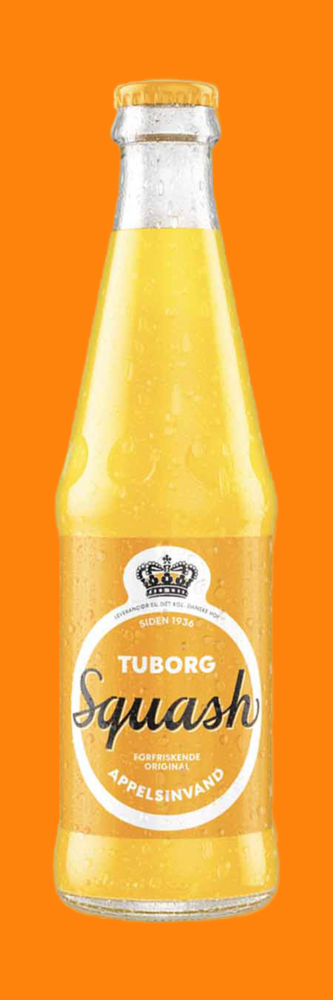

Tuborg Squash
Tuborg Squash er en klassiker, som blev introduceret tilbage i 1936. Tuborg Squash smager som en god dansk appelsinvand skal smage. Godt støttet af humoristiske reklamer er Tuborg squash blevet et charmerende folkeeje - på tværs af generationer.
Allergener: Konserveringsmiddel (E202), appelsinolier, gulerodssaft, antioxidant (ascorbinsyre), stabilisator (johannesbrødkernemel).
Næringsindhold
Energi
Energi
Fedt
Heraf mættede fedtsyrer
Kulhydrat
Heraf sukkerarter
Protein
Salt
46 kcal
197 kj
0 g
0 g
11,3 g
11,3 g
0 g
0 g
Ingredienser
Vand, sukker, appelsinsaft (5,8%), kuldioxid, syre (citronsyre), konserveringsmiddel (E202), appelsinolier, gulerodssaft, antioxidant (ascorbinsyre), stabilisator (johannesbrødkernemel).